Short Circuit Analyzer
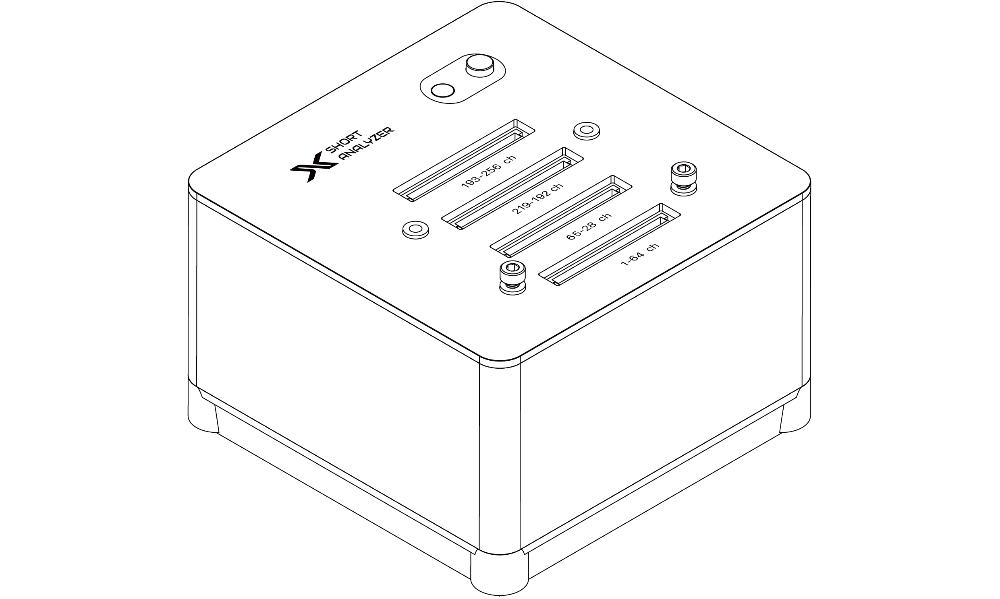
Overview
The Hardware Short Circuit Analyzer is a high-performance device engineered for efficient and precise short circuit testing, supporting up to 256-channel combinations. This analyzer is designed to identify and diagnose short circuits across large-scale circuits and complex electrode configurations, making it ideal for use in electronic design verification, fault troubleshooting, and quality control processes.
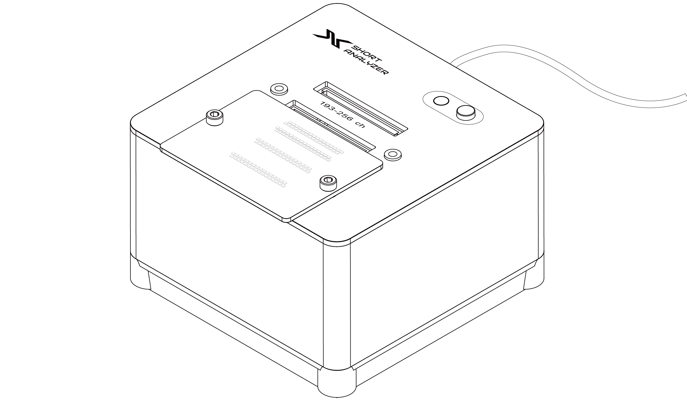
Components
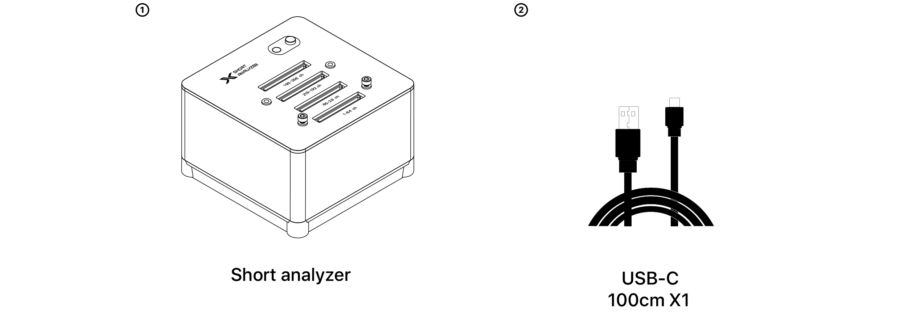
Dimension And Weight
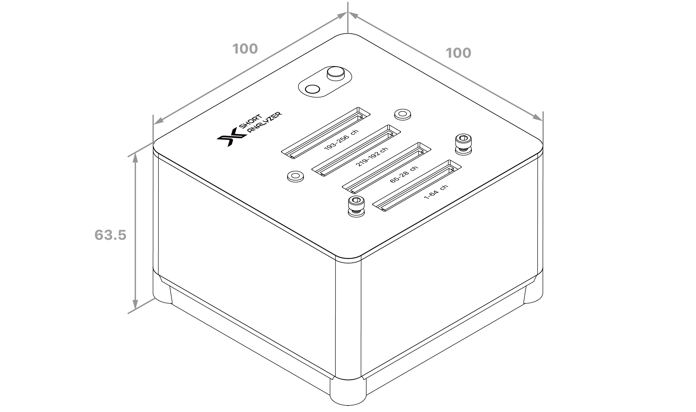
Weight 261g
unit: mm
Short circuit analyzer overview
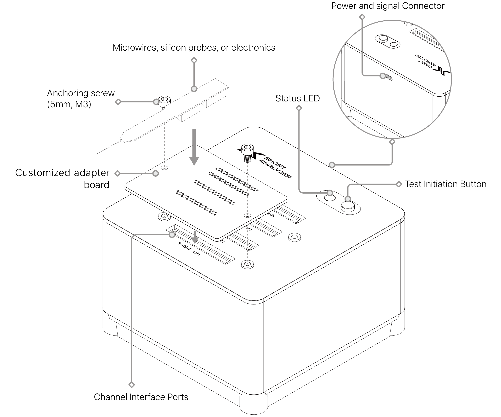
Status LED Indicators for Testing
Install the driver before connecting the XDAQ to a PC. XDAQ drivers for Windows and Linux are available on our website: https://developer.kontex.io. For macOS, search for XDAQ in the App Store.
① Use the supplied Thunderbolt cable to connect the Computer Port on the XDAQ to a Thunderbolt port on the PC.
② The XDAQ can power the connected computer: CORE2 provides up to 15W, while ONE+ and AIO can supply up to 60W.
① Use the supplied Thunderbolt cable to connect the Computer Port on the XDAQ to a Thunderbolt port on the PC.
② The XDAQ can power the connected computer: CORE2 provides up to 15W, while ONE+ and AIO can supply up to 60W.
Key Features
Comprehensive Multi-Channel Testing
The device supports up to 256 test channels, enabling extensive and customizable testing configurations. It can handle intricate circuit layouts and electrode arrays, making it an excellent tool for complex applications that require high channel count accuracy.Standalone and Remote Operation
The analyzer offers flexible operational modes, functioning autonomously or under remote control via XDAQ or UART interfaces. This dual-mode functionality allows for easy integration into various automated systems and testing setups, accommodating both on-site and remote diagnostic needs.Broad Adapter Compatibility
The device is fully compatible with KonteX's robust ecosystem of adapters, which simplifies interfacing with diverse electrode types. This flexibility ensures smooth connectivity with a wide range of components, increasing its versatility for different testing environments.Custom Adapter Options
For specialized testing requirements, custom adapters can be requested to ensure seamless interfacing with non-standard or proprietary electrodes. This customization option is essential for users with unique testing setups or those working with custom hardware configurations.High Diagnostic Precision and Efficiency
The analyzer is built to deliver rapid and accurate short circuit detection, significantly reducing the time and labor typically required for manual inspections. Its advanced circuitry and design allow it to perform reliable diagnostics, minimizing downtime in production and R&D environments.Scalable and Adaptable Design
Designed to accommodate both small-scale tests and high-density circuit boards, the analyzer is suitable for use across various stages of electronic development, from prototyping to large-scale manufacturing.Product Operation
STEP 1. Connect to the Computer
Plug the short-circuit tester's USB-C connector into your computer.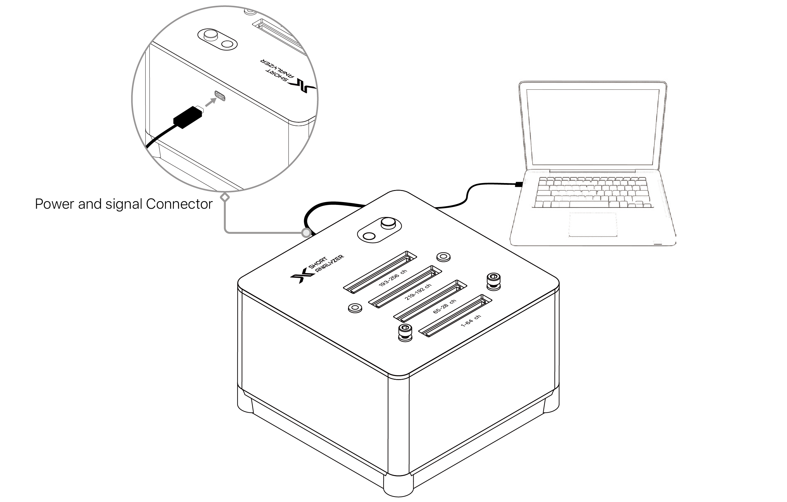
STEP 2. Launch PUTTY and Connect
Open the PUTTY interface on your computer. Locate your specific testing device in the list and confirm the connection. Once connected, you will be able to monitor test results through PUTTY.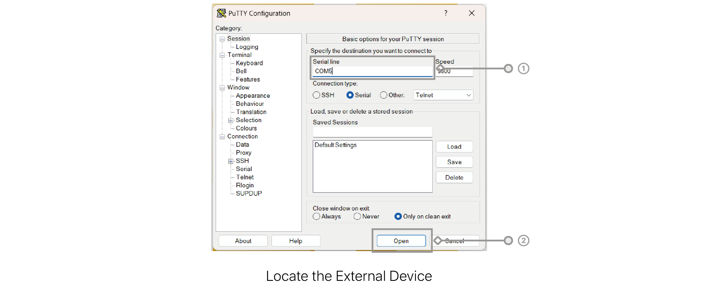
STEP 3. Prepare for Testing
Connect the components you wish to test (such as microwires, silicon probes, or electronic components) to the short-circuit tester using the customized adapter board.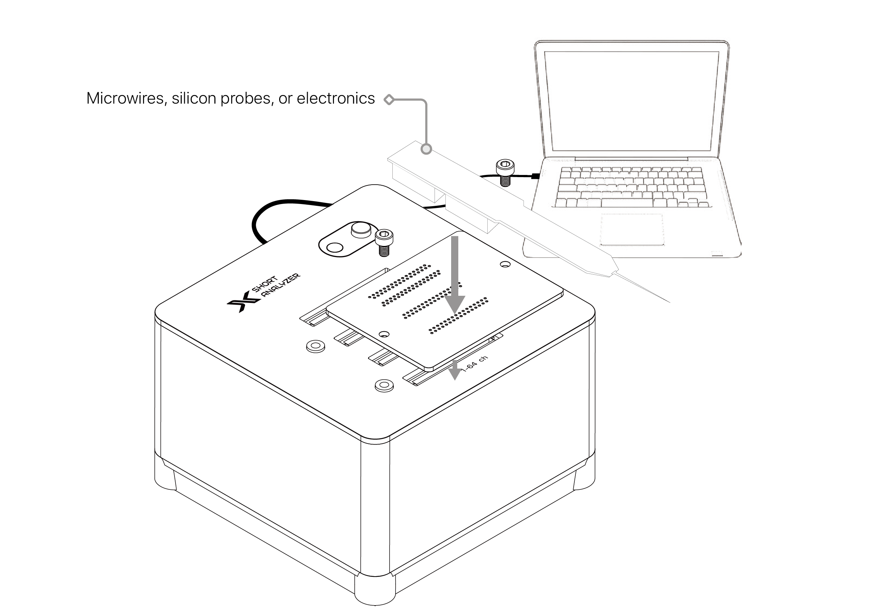
STEP 4. Initiate the Test
Press the test button on the short-circuit tester. During the test, the LED indicator on the tester will flash blue to indicate the testing process is underway.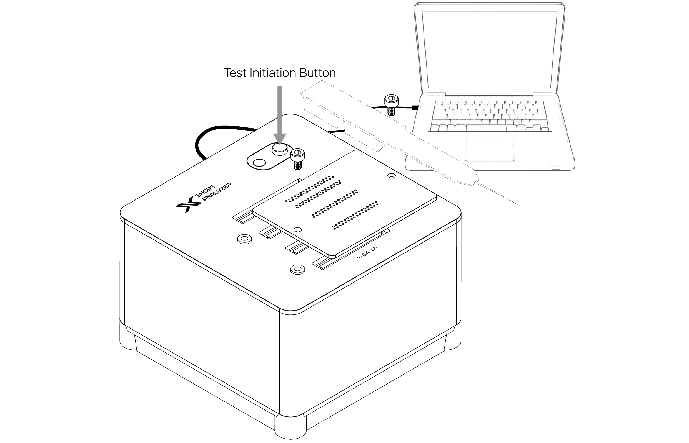
STEP 5. Interpret the Results
Green Light: If the LED turns green, this indicates no short circuit is detected in the tested components.Red Light: If the LED turns red, a short circuit is detected. Details about the specific pins with short-circuit issues can be viewed on the PUTTY interface.
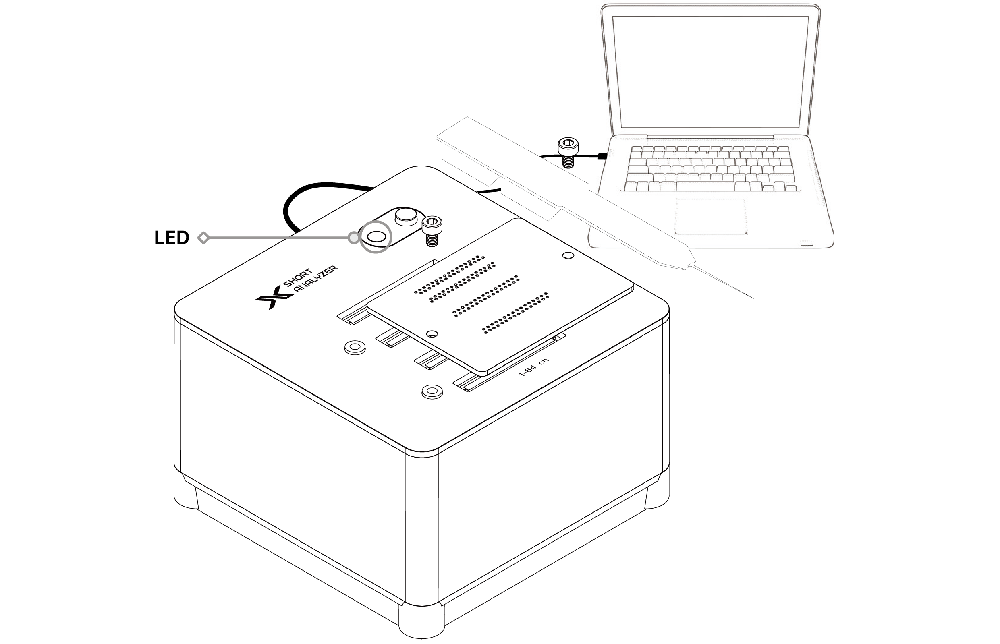
Serial Communication with Short Analyzer
The Short Analyzer uses serial communication to perform tests and receive results. Use any serial communication software with a baud rate of 115200 to connect to the device. (We recommend PuTTY on Windows; ‘screen‘ or ‘minicom‘ for macOS and Linux.)
1. Communication Protocol
To perform a short test, simply transmit the command "sct=1,test\n" and the test results will be received in the following format: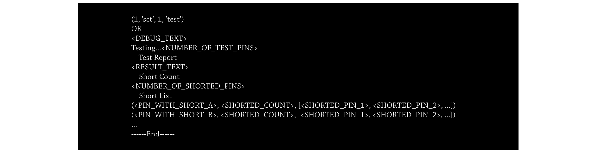
2. Example Report Without Any Shorts
3. Example Report with Two Groups of Shorted Pins {(1,2,3), (7,8)}
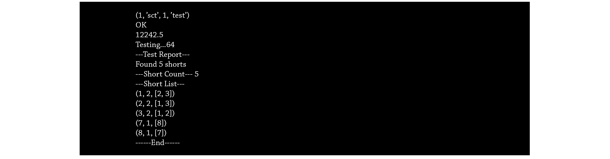
Pin Map
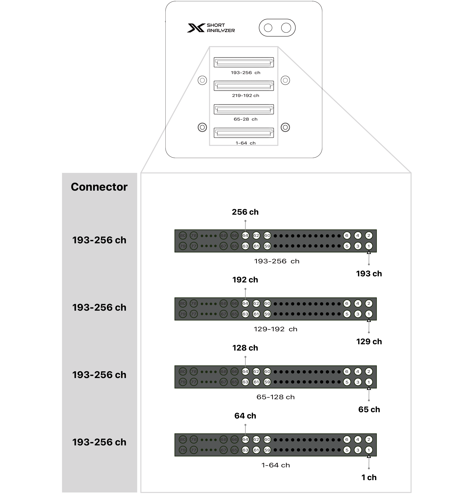
Adapter & Custom Design
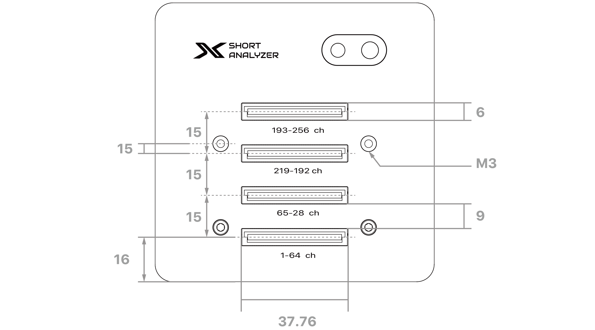